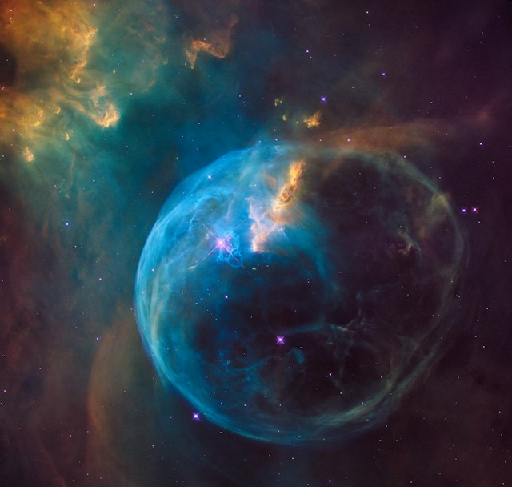
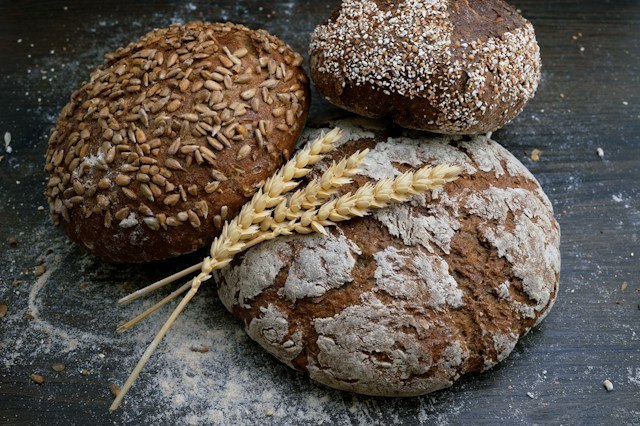

12:34
Beginner guitar: five chords that sound great together
Guitar lessons
Keep the good part of YouTube.
Clear the distractions. Follow your curiosity. Leave the rabbit holes behind.
Your time is better spent on what matters.
A feed with intention
OwnFeed is a Chrome extension that filters YouTube recommendations by your topics and hides distracting layout elements. Try the illustrative feed below.
Guitar lessons
Movie reviews

14:27Science & cinema
Celebrity gossip

10:18The home kitchen
A little curiosity
Illustrative preview · Your actual feed stays on YouTube.
Tell OwnFeed which topics you would rather skip.
Hide the clutter. Keep room for discovery.
A calmer feed for the things that move you.
A calmer everyday feed. A little extra focus when you need it.
Hide the topics you would rather skip.
Keep everything else open to discovery.
Topics to hide
Choose what you want to learn.
Keep matching videos for an optional timed session.
Today, I am here for
Try a 25-minute focus session in the example feed.
Try the layout controls in the preview.
All three distractions tucked away. Switch one on to compare.
Pricing
Free controls. Optional AI filtering with your own TypeSafe key.
Free
$0 no account needed
A calmer YouTube, with the controls to make it yours.
Bring your own key
BYOK ready$0 OwnFeed fee · provider usage extra
Choose your topics with your own TypeSafe/Jev account.
TypeSafe usage is billed to your provider account. No OwnFeed subscription.
FAQ
Less friction. More clarity.
OwnFeed is a Chrome extension for YouTube that filters recommendations by your topics and lets you hide distracting parts of the page. It is an independent project, not affiliated with YouTube or Google. The interactive feed on this website is an illustration; it does not read or change your YouTube account.
General hides recommendations matching the topics you want to skip. Focus keeps recommendations matching what you want to learn, with an optional timed session. AI topic filtering uses your own TypeSafe/Jev API key. OwnFeed is free; TypeSafe usage charges apply.
No. A topic like “movie reviews” is meant to match reviews, not everything about movies. In the preview, hiding reviews keeps the video about the science behind Interstellar. You can also correct a missed video or unblock content.
No OwnFeed account is needed. Layout controls and manual channel blocking work without a key. AI topic filtering requires your own TypeSafe/Jev API key and provider account. The key is kept for your browser session and must be entered again after Chrome restarts or OwnFeed updates.
Download the ZIP, extract it, then open chrome://extensions in desktop Chrome. Enable Developer mode, choose Load unpacked, and select the extracted folder. Open OwnFeed, add your TypeSafe key for AI filtering, and refresh YouTube. No local server or OwnFeed account is needed.
OwnFeed is free, including topic filtering, Focus sessions, and feedback controls. AI filtering uses your own TypeSafe/Jev key; TypeSafe charges your provider account for usage. OwnFeed does not collect subscription payments.
Yes. Pause filtering, change your topics, or end a Focus session whenever you like. Your preferences are yours to change.
Make a little room for what matters.
Explore the source